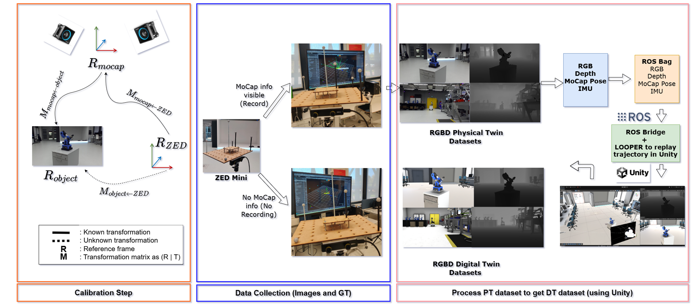

Dataset Generation Pipeline
The pipeline consists of three coordinated stages: spatial calibration, synchronized data collection with a ZED Mini stereo camera and an OptiTrack motion-capture system, and automated digital twin generation inside Unity via ROS Bridge and the LOOPER trajectory replayer.

Step 1 — Calibration
Computes the rigid transformations between the motion-capture frame (Rmocap), the ZED Mini camera frame (RZED), and the object frame (Robject). Known transformations are measured directly; the object-to-camera transform is solved analytically.
Step 2 — Data Collection
A ZED Mini camera captures synchronized RGB-D streams while an OptiTrack system records 6-DoF pose ground truth. Two conditions are captured: MoCap markers visible (recorded) and hidden (unrecorded), covering diverse lighting and clutter scenarios.
Step 3 — Digital Twin Generation
Physical twin trajectories are exported as ROS Bags (RGB, Depth, MoCap Pose, IMU) and replayed inside a Unity simulation via ROS Bridge and LOOPER. The simulation renders paired digital twin RGB-D frames, enabling domain-gap studies between real and synthetic data.
Physical Twin & Digital Twin Alignment
Each row shows one industrial object: the real-world Physical Twin (PT) captured by the ZED Mini, its corresponding Digital Twin (DT) rendered in Unity, and the Superimposition that reveals the 6D pose alignment quality (red bounding box highlights residual misalignment).

Real RGBD frames captured by the ZED Mini stereo camera in the lab environment.
Synthetic RGBD frames rendered in Unity by replaying the MoCap trajectory via LOOPER.
DT model overlaid on the PT frame using the estimated 6D pose; red boxes indicate alignment error.
Perspectives
Building on this dataset, we identify the following research directions that can advance the state of the art in industrial 6D pose estimation and digital twin alignment.
-
Foundation Models for Pose Estimation Leveraging large vision-language models (e.g., SAM, DINOv2) as feature extractors to achieve zero-shot or few-shot 6D pose estimation for unseen industrial objects, reducing the need for object-specific retraining.
-
Closing the Sim-to-Real Gap Using domain randomization and physics-based rendering within Unity to generate photorealistic synthetic data that minimises distribution shift when models are transferred to real factory environments.
-
Real-Time Digital Twin Synchronisation Extending the pipeline towards online, low-latency synchronisation between a physical robot manipulator and its digital counterpart, supporting predictive maintenance and anomaly detection in smart manufacturing.
-
Multi-Object and Cluttered Scene Understanding Expanding the dataset to densely cluttered industrial scenes with partial occlusions and inter-object contact, benchmarking instance-level pose estimation under realistic factory floor conditions.
-
Generalisation Across Industrial Domains Collecting additional object categories (machined parts, electronic assemblies, connectors) to create a large-scale benchmark that evaluates cross-category generalisation of pose and reconstruction methods.
Current Works
Active research and development efforts within the FUSION project at CESI LINEACT.
-
Industrial-GS Dataset v1.0 Complete Full acquisition of synchronized RGB-D + MoCap sequences for the first set of industrial objects. Data validation, calibration verification, and format conversion to a standardised HDF5 / ROS Bag distribution package.
-
Gaussian Splatting for Industrial 3D Reconstruction Ongoing Evaluating 3D Gaussian Splatting (3DGS) as a novel-view synthesis and reconstruction backbone for industrial objects, assessing its accuracy and real-time rendering performance compared to NeRF-based approaches.
-
6D Pose Estimation Benchmark Ongoing Running baseline evaluations of state-of-the-art pose estimators (FoundPose, GigaPose, FoundationPose) on the Industrial-GS dataset, establishing reference metrics for ADD, ADD-S, and 5°5cm scores.
-
Unity Digital Twin Expansion Ongoing Extending the Unity simulation environment to support additional robot models and background scenes, and integrating automatic material randomisation to improve synthetic-to-real transfer performance.
-
Dataset Paper Submission Planned Preparation of a dataset paper including full protocol description, calibration analysis, and baseline benchmark results for submission to a computer vision venue (CVPR / ECCV / IROS).
BibTeX
@article{choudhary2024industrial,
title={6D Pose Estimation and 3D Reconstruction of Industrial Physical Twin and Digital Twin Datasets},
author={Choudhary, Sunil and Asfaw, Mickyas-Tamiru and Laignel, Aristide and Ragot, Nicolas and Havard, Vincent and Dupuis, Yohan},
institution={CESI LINEACT},
year={2024}
}